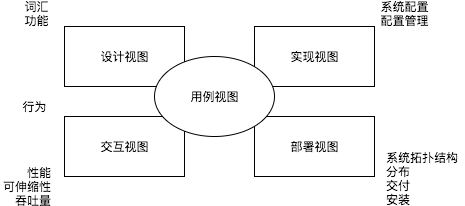

最近又重新学习UML了，对于4+1视图模型和UML中各种图的映射关系不是很理解。经过查找资料，才发现其实没有十分明确的映射关系。 没个人的见解和看法各不相同。现把总结得比较好的内容记录下来，一来备忘，二来可以与大家分享。
Grady Booch的《UML用户指南》（中文版）将4+1视图模型描述为：

Figure 1: 对系统的体系结构建模
软件体系结构不仅关心结构和行为，而且还关心用法、功能、性能、弹性、复用、可理解性、经济与技术约束及其折中，以及审美的考虑。
最好用5个互联的视图来描述软件密集型系统的体系结构。每一个视图在一个特定的方面对系统的组织和结构进行的投影。
系统的用例视图（use case view）由描述可被最终用户、分析人员和测试人员看到的系统行为的用例组成。用例视实际上没有描述软件系统的组织，而是描述了行成系统体系结构的动力。 在UML中，该视图的 静态 方面有用例图表现； 动态 方面由交互图、状态图和活动图表现。
系统的设计视图（design view）包含了类、接口和协作，他们形成了问题及其解决方案的词汇。这种视图主要支持系统的 功能需求 ，即系统应该提供给最终用户的服务。 在UML中，该视图的 静态 方面由类图和对象图表现； 动态 方面由交互图、状态图和活动图表现。 类的内部结构图 特别有用。
类的内部结构图 ，这个再介绍组件图的时候提到过，类图只能描述其属性和操作，而类的内部结构图则可以描述内部成员的结构。
系统的交互视图（interaction view）展示了系统的不同部分之间的控制流，包括可能的并发和同步机制。该视图主要针对性能、可伸缩性和系统的吞吐量。 在UML中，对该视图的静态方面和动态方面的表现和设计视图相同，但着重于控制系统的的主动类和在他们之间流动的消息。
系统的实现视图（implement view）包含了用于装配与发布物理系统的制品。这种视图主要针对系统发布的配置管理，它由一些独立的文件组成；这些文件可以用各种方法装配，以产生运行系统。 它也关注从逻辑的类和组件（component）到物理制品（artifact）的映射。在UML中，该视图的静态方面由组件图表现，动态图由交互图、状态图和活动图表现。
系统的部署图（deployment view）包含了形成系统硬件拓扑结构的节点（系统在其之上运行）。这种视图主要描述组成物理系统的部件（part）的分布、交付和安装。 在UML中，该视图的静态方面由部署图表现，动态图由交互图、状态图和活动图表现。
这5种视图中的每一种都可单独使用，使不同的人员能专注于他们最为关心的体系结构问题。这五种视图也会相互作用，如部署视图中的节点拥有实现视图的组件， 而这些组件又表示了设计视图和交互视图中的类、接口、协作以及主动类的物理实现。UML允许表达这五种视图中的任何一种。
以上内容摘自《UML用户指南》，最后一段话中，作者说部署视图中的节点拥有实现视图的组件，但是，其他地方有的说这些节点拥有制品（artifact）。 或许这两种方式都是可以的。因为UML本身使用就很灵活。不过，按照我的理解节点应该是包含制品，制品图用于描述其和类与组件之间的关系。
以下内容摘自stack exchange：
Th advantage of the 4+1 View Model is that it maps stakeholders to the type of information that they need, without requiring specific modeling notations to be used. The emphasis is on ensuring that all groups have the information to understand the system and continue to do their job.
The 4+1 View Model of Software Architecture was described in Philippe Kruchten's paper Architectural Blueprints - The "4+1" View Model of Software Architeture that was originally published in IEEE Software (November 1995). This publication doesn't make specific references to UML. In fact, the paper uses the Booch notation for the logical view, extensions to the Booch notation for process view and development view, calls out the use of "several forms" of developing a physical view, and a new notation for scenarios.
Instead of trying to map each of the views to particular types of diagrams, consider who the target audience of each view is and what information they need. Knowing that, look at various types of models and which one(s) provide the required information.
The logical view is designed to address the end user's concerns about ensuring that all of their desired functionality is captured by the system. In an object-oriented system, this is often at the class level. In complex systems, you may need a package view and decompose the packages into multiple class diagrams. In other paradigms, you may be interested in representing modules and the functions they provide. The end result should be a mapping of the required functionality to components that provide that functionality.
The process view is designed for people designing the whole system and then integrating the subsystems or the system into a system of systems. This view shows tasks and processes that the system has, interfaces to the outside world and/or between components within the system, the messages sent and received, and how performance, availability, fault-tolerance, and integrity are being addressed.
The development view is primarily for developers who will be building the modules and the subsystems. It should show dependencies and relationships between modules, how modules are organized, reuse, and portability.
The physical view is primarily for system designers and administrators who need to understand the physical locations of the software, physical connections between nodes, deployment and installation, and scalability.
Finally, the scenarios help to capture the requirements so that all the stakeholders understand how the system is intended to be used.
Once you understand what each view is supposed to provide, you can choose what modeling notations to use and at what level of detail is required. Bart's last paragraph is especially true - you can show various levels of details in your UML models by focusing on particular design elements or combining various types of diagrams into a set. In addition, you may want to consider going beyond UML to other modeling notations to better describe your system architecture - SysML, Entity-Relation modeling, or IDEF.
答主从使用者的角度阐释了各种视图的用途。根据需求选择合适的视图去描述系统体系结构。所以视图和UML各种图之间没有十分明确的映射关系。
参考资料
- UML用户指南 / Grady Booch / 人民邮电出版社
- Mapping between 4+1 architectural view model & UML